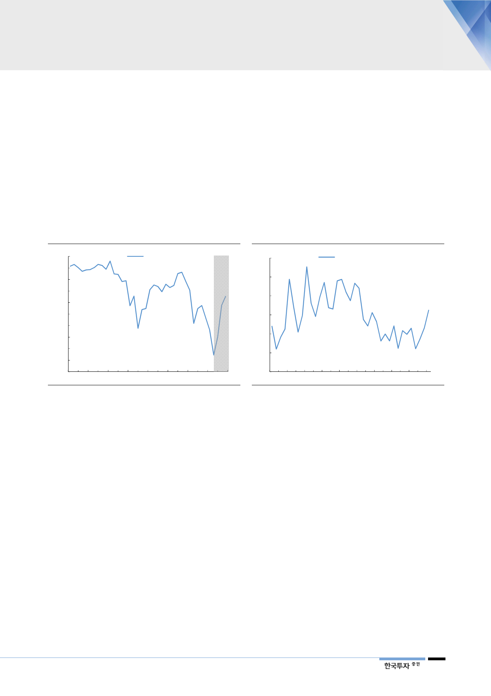

친환경 에너지원으로서의
역할 커질 듯
향후 몇 년간 신규 원전 및 석탄발전이 가동을 시작, 그리고 급락했던 원전 이용
률 회복으로 발전용 수요감소는 불가피한 상황이다. 그럼에도 에너지전환이라는
큰 그림 속에서 친환경 에너지원으로서의 역할은 커질 것이다. 또한 전기요금제
도 개편 및 LNG에 우호적인 정책들이 예상돼 현재 30%대로 낮아진 LNG발전
기 이용률이 높아질 요인들이 많은 상황이다. 이를 감안하면 다음 천연가스수급
계획에서는 발전용 천연가스 수요가 상향 조정될 가능성이 높아 보인다. 가스공
사의 경우는 단기적으로 천연가스 판매량이 줄어든다고 해서, 정부 보장이익이
감소하지 않는다. 오히려 정부의 장기 천연가스 수요전망 상향조정으로 가스공사
가 설비투자를 늘려야 할 긍정적인 상황에 주목할 필요가 있다.
[그림 5] 원전이용률 – 하반기 회복 전망
(%)
100
원전 이용률
95
90
85
80
75
70
65
60
55
50
1Q09 2Q10 3Q11 4Q12 1Q14 2Q15 3Q16 4Q17
자료: 한국수력원자력, 한국투자증권
[그림 6] LNG발전기 이용률
– 향후 몇 년간 낮아질 가능성 높아
(%)
80
LNG발전기 이용률
70
60
50
40
30
20
1Q09 1Q10 1Q11 1Q12 1Q13 1Q14 1Q15 1Q16 1Q17 1Q18
자료: 한국수력원자력, 한국투자증권
공공의 역할 강조
민간 LNG 직도입의 증가로 가스공사의 역할 축소에 대한 우려가 있다. 이미 작
년 기준 LNG 직도입 물량은 464만톤까지 늘어나, 우리나라 발전용 수요의 26.8%
로 높아진 상황이다. 그럼에도 향후에 민간 직도입 자유화 속도는 더딜 것으로 판
단하며 직도입 물량 확대도 한계가 있어 보인다. 이번 천연가스 수급계획에서
LNG 직도입 물량을 배정하기 보다는, 오히려 가스공사의 공공의 역할을 강조한
것이 그 이유다. 지난 혹한으로 천연가스 수요가 폭등했고 발생한 재고 부족으로
스팟물량 확보 등 수급에 어려움이 많았기 때문이다. 이번에 신설된 ‘천연가스 연
료대체 계약’도 같은 맥락으로 이해된다. 또한 향후 안정적인 천연가스 도입과 공
급, 가격 다양화, 그리고 수급관리 유연성 확대를 위해서는 가스공사의 역할 확대
는 필연적이다.
5